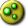

This section will take you through the steps of creating a playable, standard multiplayer map for Army Men RTS.
Go ahead and do the following:
You'll want to create a team for each player your map will support. What you name them won't matter, but it might help to name them based on their cardinal location on the map. (for example, "Team-NW") But just "team(x)" is fine.
Now we are going to mark the spots that are going to be the player's start locations. Hit the
Now, you'll need to go into each team's config and make some settings. Double click on the team name to get the team config menu. For EACH team do the following:
| Default Client | Disabled* |
| Avilable to Player | Enabled |
| Has Stats | Enabled |
| Requires AI | Disabled |
| Resources | 2000 800** |
| Region | (Starting region) |
| Personality | (Any) |
| Side | Army |
| Fixed Side | Disabled |
| Enable Type Filtering | Disabled |
*Set this to disabled for all except any 1 team.
**Recommended values for teams is 2000 or 2500 for plastic, and 800 or 1000 for electricity. But you may choose anything you feel is best for your map. 100k each is also an option if you want to make a maxrush map. Regardless, make sure it's the same for all teams for balance.
Before you forget, double-check you set a start region for each playable team. (so team1's region would be the "team1_start" region) Do not forget this step! Neglecting to assign regions to your playable teams may result in "None" for the offending team.
While the personality you set won't matter for teams available to players, it's recommended to it to "default" instead of nothing at all for debug reasons. It'll be overridden when a mutliplayer match starts anyways.
Finally, you likely need to set a ruleset for the map. All of the standard multiplayer maps in AMRTS have "Protect HQ" as its ruleset, with 2 exceptions. (King of the Hill uses the ruleset of the same name, and DumDum Frenzy uses custom objectives in lue of a ruleset) Click "Tools" in the lower left. Select "Ruleset" and "Protect HQ" from the dropdown box.
Hopefully you've been saving your map perodically as you've been working on it. If not, it's a good habit when working on larger projects, especially beyond AMRTS. Quick-save your map with
TODO: Add links to forum posts with those tools.